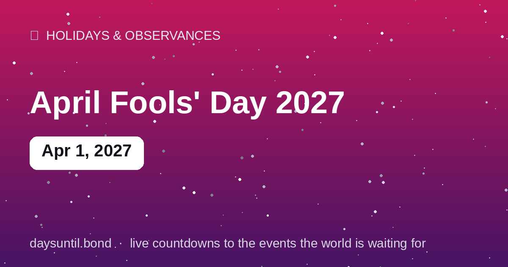

How Many Days Until April Fools' Day 2027?
April Fools' Day 2027 falls on Thursday, April 1, 2027.
The live counter above updates every second in your local time zone. The date and weekday are shown in the event details.

Quick facts
| Date | Thursday, April 1, 2027 |
|---|---|
| Category | Holiday / observance |
About April Fools' Day 2027
April Fools' Day 2027 falls on Thursday, April 1, 2027. The one day the internet becomes 40% less trustworthy. Pranks, fake product launches and hoaxes are the whole point — verified news published on April 1 is the ultimate test of media literacy.
The live counter above counts down the days, hours and minutes to April Fools' Day 2027 in your local time zone, and switches to a 'days since' counter once it arrives.
Your April Fools' Day 2027 countdown milestones
It is easier to plan against fixed points than against a number that moves. These are the dates on which the countdown to April Fools' Day 2027 passes each marker between now and the day itself — the last one falls on Wednesday 31 March, when there will be 1 day left.
| Milestone | Day | Date | Remaining |
|---|---|---|---|
| 100 days | Tuesday | 22 December 2026 | 100 days to go |
| 50 days | Wednesday | 10 February 2027 | 50 days to go |
| 30 days | Tuesday | 02 March 2027 | 30 days to go |
| 14 days | Thursday | 18 March 2027 | 14 days to go |
| 7 days | Thursday | 25 March 2027 | 7 days to go |
| 3 days | Monday | 29 March 2027 | 3 days to go |
| 1 days | Wednesday | 31 March 2027 | 1 day to go |
How the remaining time breaks down
125 days is the headline, but it is rarely the number that helps. 89 of those are weekdays and 36 fall on a weekend, which is the split that matters if you are planning around work. It is 17 weeks and 6 days, or roughly 4.1 months, or about 3,000 hours.
| Unit | Until April Fools' Day 2027 |
|---|---|
| Days | 125 |
| Weeks | 17 weeks and 6 days |
| Months (approx) | 4.1 |
| Weekdays | 89 |
| Weekend days | 36 |
| Hours | 3,000 |
| Sleeps | 125 |
Working days are Monday to Friday and do not subtract public holidays, which vary by country and employer — the full month-by-month split is on our weekday page for April Fools' Day 2027.